DJ-STYLE TRACKER FOR THE C64
BY ILLOBO/NETMILK · V0.4B
SIDJ is a music tracker for the Commodore 64.
DOWNLOAD SIDJ.D64READ THE MANUALQUICK REFERENCE
From phrase to song
SIDJ sequences phrases of notes and commands for the SID chip, then chains them into a song.
- A phrase is 16 steps of notes and commands.
- A chain plays phrases in a row.
- A song arranges chains on three channels.
Live mode
Each channel loops its own chain. Queue the next one and it starts on the beat.
Beat repeat: hold a key to repeat the last steps of every channel. Let go and the song plays on.
,8 steps.4 steps/2 steps;1 step
What you need
- A Commodore 64 or C64 Ultimate
- A 1541 disk drive
Extras
- RAM Expansion Unit: undo, help pages, drum view, song slots
- Second SID: six channels
- 1351 mouse: click to edit, faders for live play
The disk
- SIDJ: the loader menu
- SIDJ.EDITOR: the tracker
- T.A.S.T.E.: transverts (extracts and approximately converts) most .SID tunes on a disk into SIDJ songs, a starting point for experimental remixes
- README and MANUAL: read them on the C64, with music
- Songs: a demo and ten tracks to load and remix
- Kits: three drum kits
Screens
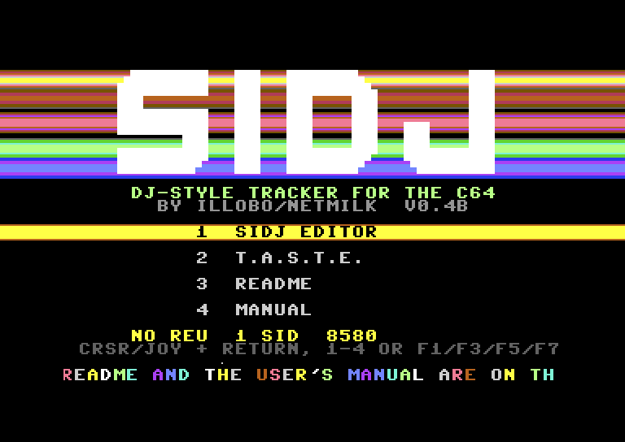
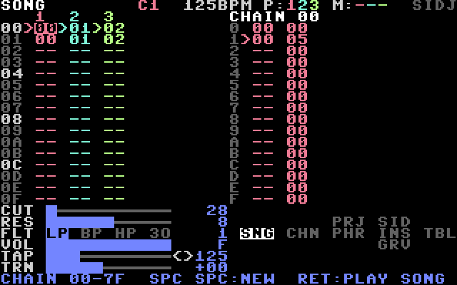
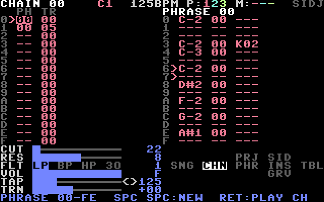
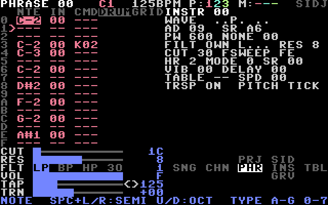
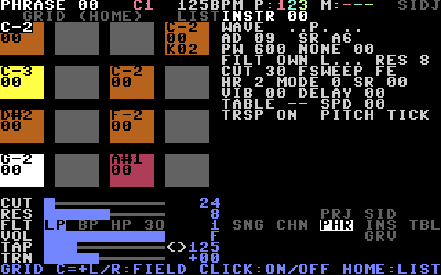
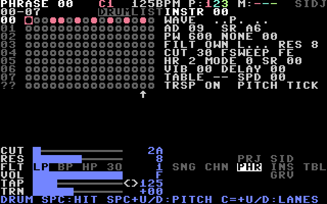
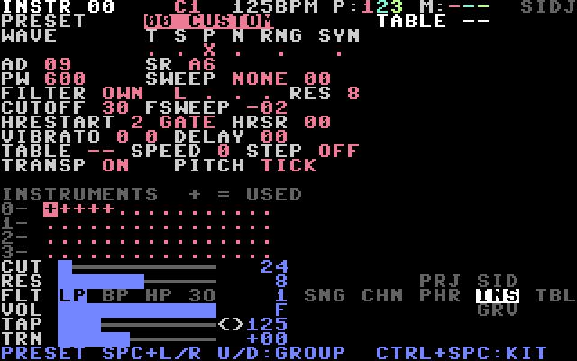
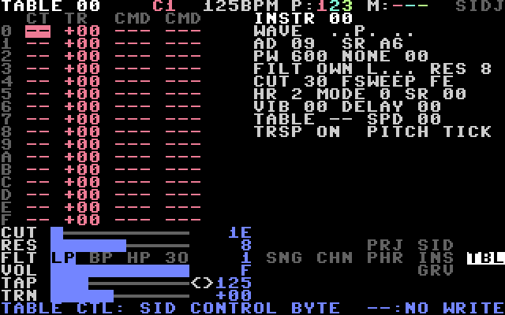
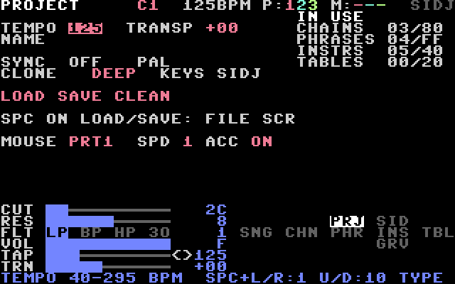
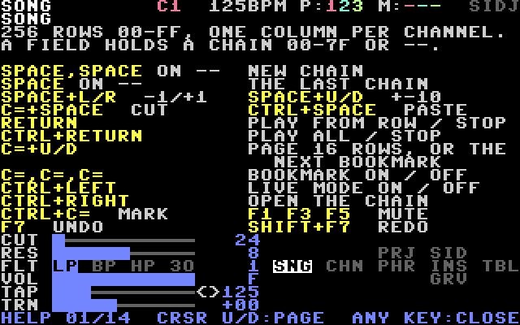
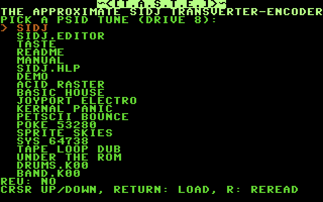
Manual
- LOADING INSTRUCTIONS
- CHAPTER 1: BEFORE YOU START
- CHAPTER 2: YOUR FIRST SOUND
- CHAPTER 3: YOUR FIRST SONG
- CHAPTER 4: DRUMS
- CHAPTER 5: THE SCREENS
- CHAPTER 6: EDITING
- CHAPTER 7: INSTRUMENTS AND TABLES
- CHAPTER 8: COMMANDS
- CHAPTER 9: GROOVES AND TEMPO
- CHAPTER 10: LIVE MODE
- CHAPTER 11: THE MOUSE
- CHAPTER 12: SAVING AND LOADING
- CHAPTER 13: EXPORTING A SONG
- CHAPTER 14: T.A.S.T.E.
- CHAPTER 15: LIMITS AND MESSAGES